1. Տրանսպորտային միջոցները խաչմերուկը կանցնեն հետևյալ
հերթականությամբ՝
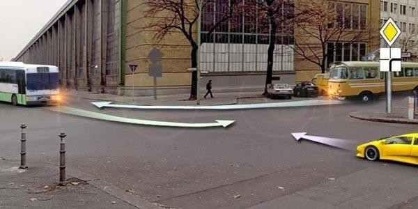
2. Խաչմերուկն առաջինը կանցնի՝
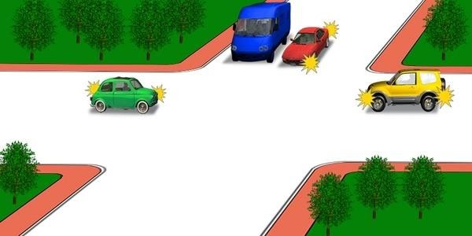
3. Խաչմերուկը վերջինը կանցնի՝
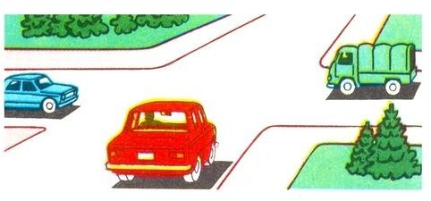
4. Կապույտ ավտոմոբիլը խաչմերուկը կանցնի՝
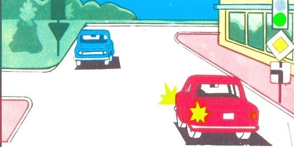
5. Ո՞ր պատասխանում է ճիշտ նշված խաչմերուկի անցման
հերթականությունը։
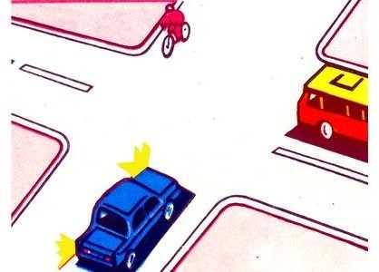
6. Խաչմերուկը երկրորդը կանցնի՝
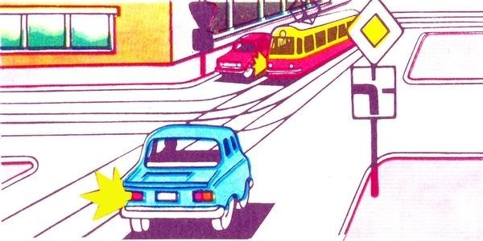
7. Ո՞ր ուղղությամբ է արգելվում երթևեկությունը։
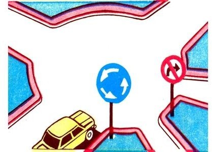
8. Խաչմերուկը երկրորդը կանցնի՝
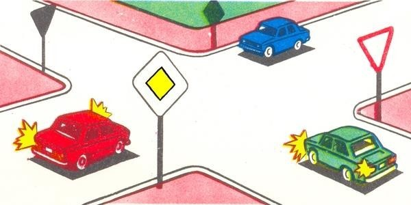
9. Խաչմերուկը երկրորդը կանցնի՝
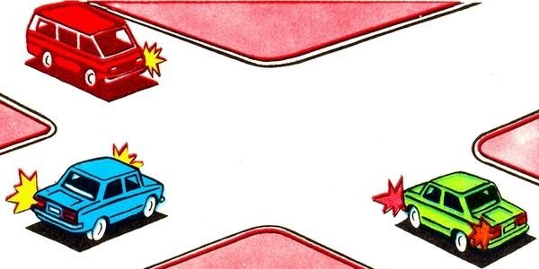
10. Խաչմերուկը երկրորդը կանցնի՝
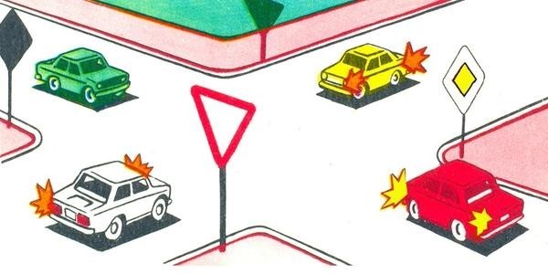
11. Խաչմերուկը վերջինը կանցնի՝
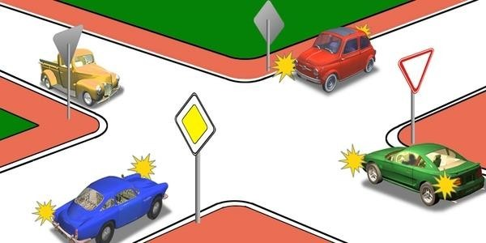
12. Ո՞ր տրանսպորտային միջոցի վարորդը պետք է զիջի ճանապարհը։
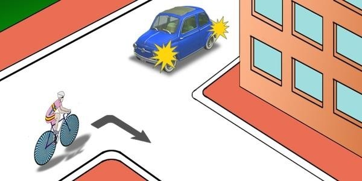
13. Խաչմերուկն առաջինը կանցնի՝

14. Տրանսպորտային միջոցները ի՞նչ հերթականությամբ խաչմերուկը
կանցնեն։
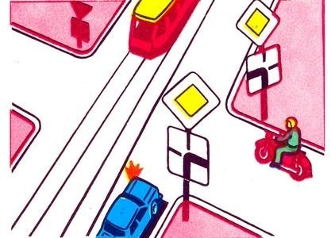
15. Խաչմերուկը երկրորդը կանցնի՝
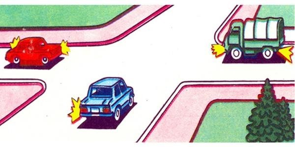
16. Խաչմերուկը վերջինը կանցնի՝
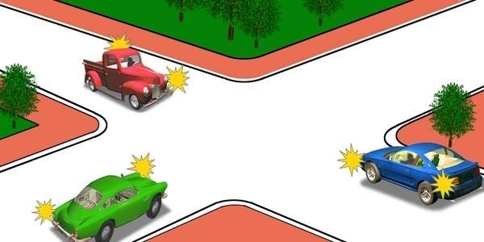
17. Ո՞ր ավտոմոբիլը վերջինը կանցնի խաչմերուկը։
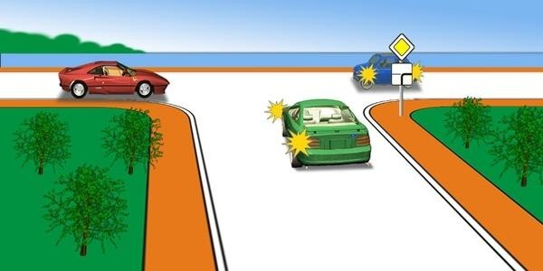
18. Խաչմերուկն առաջինը կանցնի՝
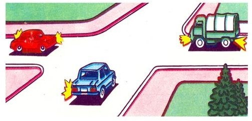
19. Ո՞ր տրանսպորտային միջոցի վարորդը պետք է զիջի ճանապարհը։
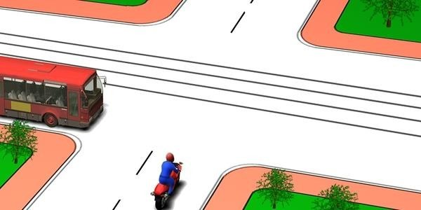
20. Խաչմերուկն առաջինը կանցնի՝
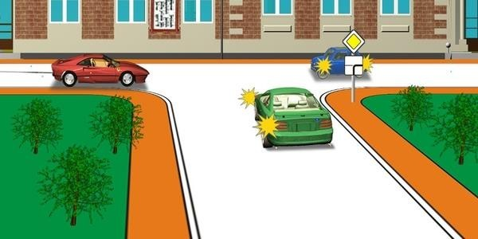
21. Խաչմերուկը երկրորդը կանցնի՝
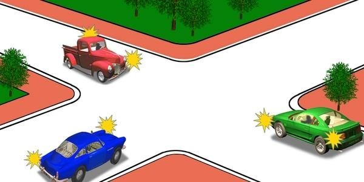
22. Խաչմերուկը երրորդը կանցնի՝
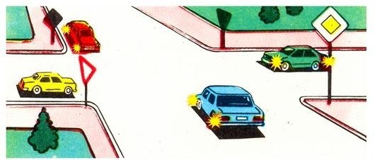
23. Կարմիր ավտոմոբիլը՝

24. Ավտոմոբիլները խաչմերուկը կանցնեն հետևյալ հերթականությամբ՝
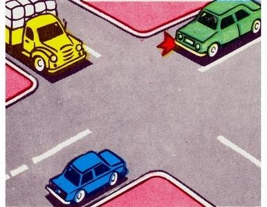
25. Խաչմերուկը երրորդը կանցնի՝
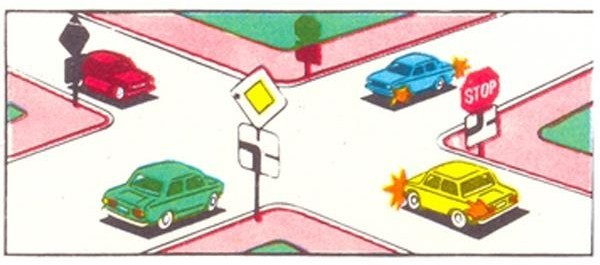
26. Խաչմերուկն առաջինը կանցնի՝
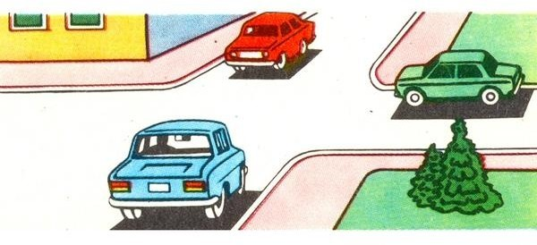
27. Տրանսպորտային միջոցները խաչմերուկը կանցնեն հետևյալ
հերթականությամբ՝
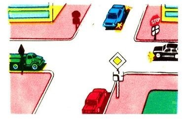
28. Խաչմերուկը տրանսպորտային միջոցները կանցնեն հետևյալ
հերթականությամբ՝
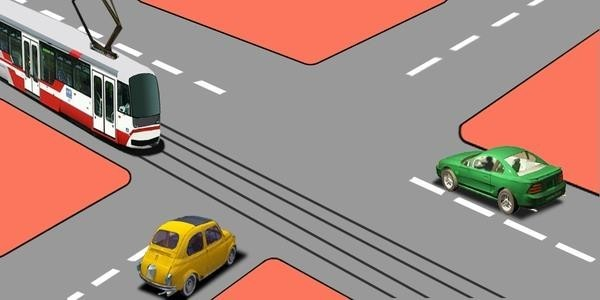
29. Վարորդներից ո՞րն ունի առաջնահերթ երթևեկության իրավունք։
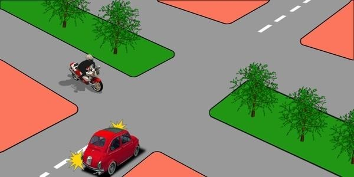
30. Խաչմերուկը երկրորդը կանցնի՝
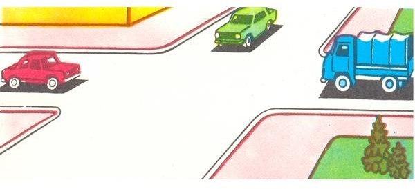
31. Ո՞ր տրանսպորտային միջոցի վարորդը պետք է զիջի ճանապարհը։
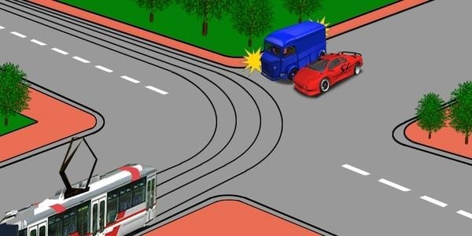
32. Կարմիր ավտոմոբիլը խաչմերուկը կանցնի՝
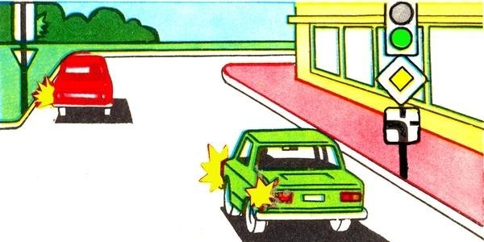
33. Տրանսպորտային միջոցները խաչմերուկը կանցնեն հետևյալ
հերթականությամբ՝
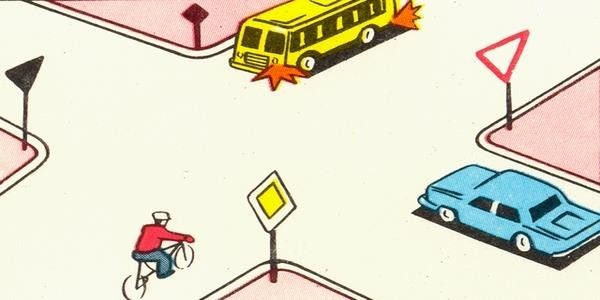
34. Ո՞ր տրանսպորտային միջոցի վարորդն ունի առաջնահերթ
երթևեկության իրավունք։
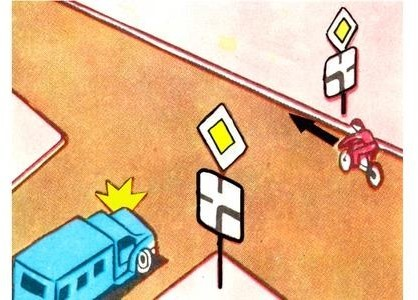
35. Տրանսպորտային միջոցները խաչմերուկը կանցնեն հետևյալ
հերթականությամբ՝
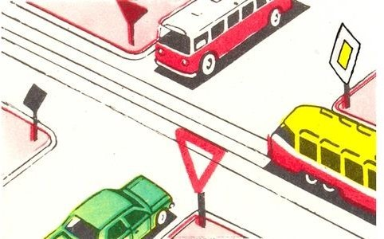
36. Ո՞ր տրանսպորտային միջոցի վարորդը պետք է զիջի ճանապարհը։
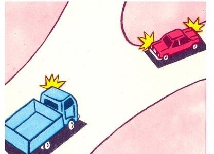
37. Ո՞ր տրանսպորտային միջոցի վարորդը պետք է զիջի ճանապարհը։
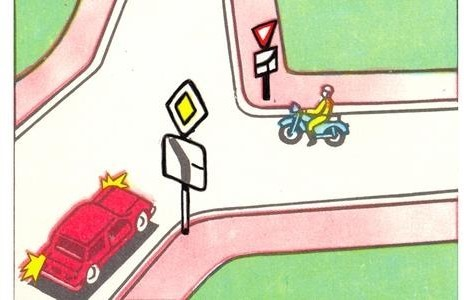
38. Ո՞ր տրանսպորտային միջոցի վարորդն է ճիշտ մուտք գործում
շրջանաձև երթևեկությամբ խաչմերուկ։
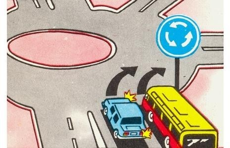
39. Ո՞ր տրանսպորտային միջոցն ունի առաջնահերթ երթևեկության
իրավունք։
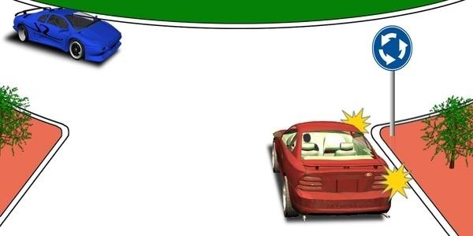
40. Ցույց տվեք խաչմերուկի անցման հերթականությունը՝
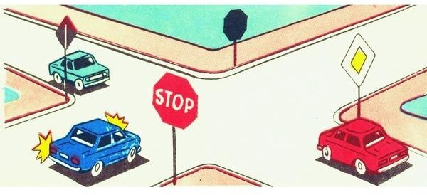
41. Կանաչ ավտոմոբիլի վարորդը՝
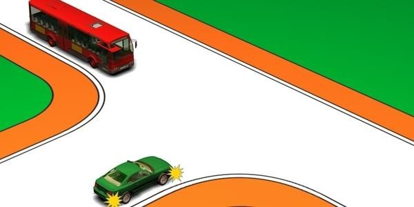
42. Խաչմերուկը վերջինը կանցնի՝
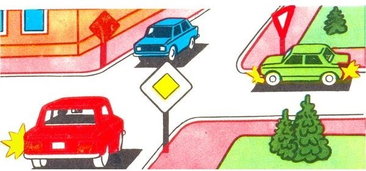
43. Խաչմերուկը երկրորդը կանցնի՝
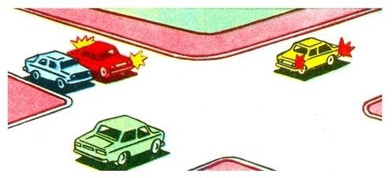
44. Ավտոմոբիլները խաչմերուկը կանցնեն հետևյալ հերթականությամբ՝
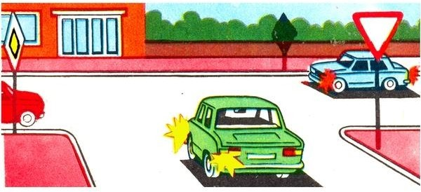
45. Խաչմերուկը երկրորդը կանցնի՝
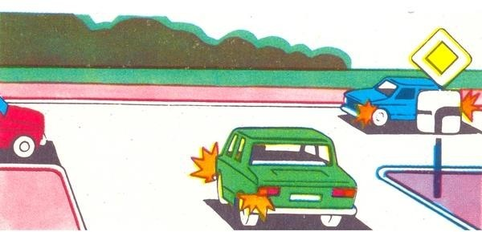
46. Կարմիր ավտոմոբիլը խաչմերուկը կանցնի՝
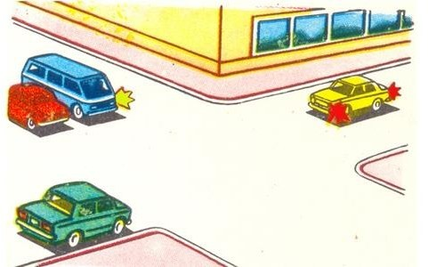
47. Դեղին ավտոմոբիլը խաչմերուկը կանցնի՝
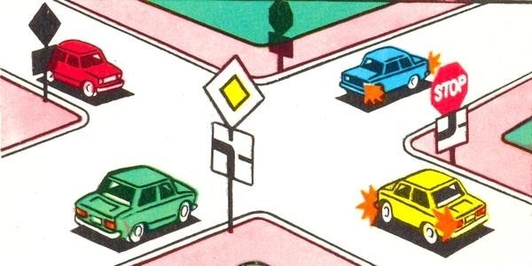
48. Ո՞ր պատասխանում է ճիշտ նշված անցման հերթականությունը։
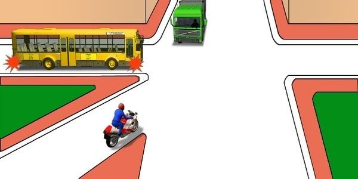
49. Տրանսպորտային միջոցները խաչմերուկը կանցնեն հետևյալ
հերթականությամբ՝
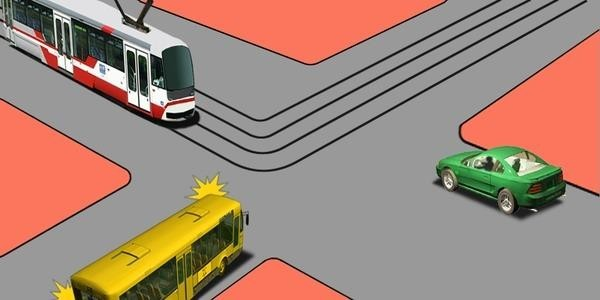
50. Ո՞ր տրանսպորտային միջոցի վարորդը պետք է զիջի ճանապարհը։
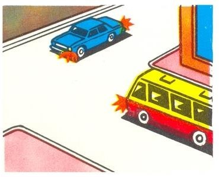
51. Ո՞ր տրանսպորտային միջոցը պետք է զիջի ճանապարհը։

52. Տրանսպորտային միջոցները խաչմերուկը կանցնեն հետևյալ
հերթականությամբ՝
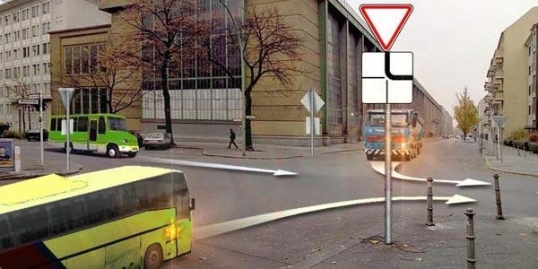
53. Տրանսպորտային միջոցները խաչմերուկը կանցնեն հետևյալ
հերթականությամբ՝
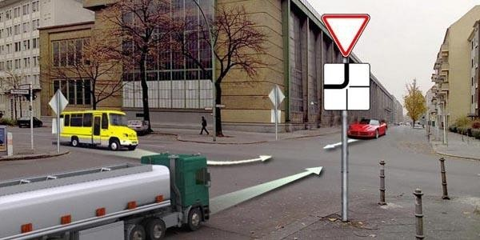
54. Ի՞նչ հերթականությամբ կանցնեն խաչմերուկը տրանսպորտային
միջոցները, եթե լուսացույցերը չեն աշխատում՝
55. Տրանսպորտային միջոցները խաչմերուկը կանցնեն հետևյալ
հերթականությամբ՝
56. Տրանսպորտային միջոցները խաչմերուկը կանցնեն հետևյալ
հերթականությամբ՝
57. Տրանսպորտային միջոցները խաչմերուկը կանցնեն հետևյալ
հերթականությամբ՝
58. Տրանսպորտային միջոցները խաչմերուկը կանցնեն հետևյալ
հերթականությամբ՝
59. Թեթև մարդատար ավտոմոբիլը խաչմերուկը կանցնի`
60. Տրանսպորտային միջոցները խաչմերուկը կանցնեն հետևյալ
հերթականությամբ՝
61. Տրանսպորտային միջոցները խաչմերուկը կանցնեն հետևյալ
հերթականությամբ՝
62. Կարող են արդյո՞ք միաժամանակ կատարել ձախ շրջադարձն այս
խաչմերուկում
63. Ո՞ւմ եք պարտավոր զիջել ճանապարհը տվյալ իրավիճակում
64. Այս իրավիճակում ձախ շրջադարձ կատարելիս
65. Այս իրավիճակում աջ շրջադարձ կատարելիս
66. Ձախ շրջադարձ կատարելիս պարտավոր եք զիջել ճանապարհը
67. Երթևեկությունն ուղիղ շարունակելու դեպքում
68. Այս իրավիճակում հետադարձ կատարելիս անհրաժեշտ է ճանապարհը
զիջել
69. Այս իրավիճակում խաչմերուկն անցնելիս հետիոտներին խոչընդոտ
չստեղծել
70. Խաչմերուկից անմիջապես հետո գոյացած խցանման պայմաններում
մուտք գործելը խաչմերուկ թույլատրելի է միայն
71. Զիջել ճանապարհը պարտավոր ենք
72. Խաչմերուկն անցնելիս վարորդը պարտավոր է զիջել ճանապարհը
73. Այս իրավիճակում ձախ շրջադարձ կատարելիս պարտավոր ենք զիջել
ճանապարհը
74. Պարտավոր ենք զիջել ճանապարհը
75. Ճանապարհը պետք է զիջեք
76. Այս իրավիճակում խաչմերուկն անցնելիս զիջել ճանապարհը
77. Խաչմերուկն անցնելիս այս իրավիճակում
78. «Շրջանաձև երթևեկություն» նշանով կահավորված շրջանաձև
երթևեկությամբ խաչմերուկ մուտք գործելիս տրանսպորտային միջոցի
վարորդը
79. Այս իրադրությունում ձախ շրջադարձի ժամանակ պարտավոր ենք
զիջել ճանապարհը
80. Ո՞ր վարորդն է պարտավոր չխոչընդոտել հետիոտներին
81. Այս իրավիճակում վարորդը կարող է՞ կատարել ձախ շրջադարձը
82. Այս իրադրությունում ձախ շրջադարձ կատարելիս վարորդը
83. Նշանները հայտնում են, որ
84. Երկրորդ անցում ձախ շրջադարձ կատարելու դեպքում վարորդն
85. Խաչմերուկն ուղիղ անցնելիս վարորդը
86. Ձախ շրջադարձ կատարելիս վարորդն ո՞ւմ է պարտավոր զիջել
87. Այս խաչմերուկ մուտք գործելիս վարորդը
88. Ձախ շրջադարձ կատարելիս վարորդն ո՞ւմ է պարտավոր զիջել
89. Այս իրադրությունում զիջել պարտավոր ենք
90. Ձախ շրջադարձ կատարելիս
91. Աջ շրջադարձն այս իրադրությամբ կատարում ենք
92. Աջ շրջադարձ կատարելիս
93. Ձախ շրջադարձ կատարելիս պետք է ճանապարհը զիջեք
94. Ձախ շրջադարձ կատարելիս
95. Ուղիղ երթևեկելիս պարտավոր եք զիջել
96. Տրամվային զիջել
97. Այս իրավիճակում ե՞րբ է թույլատրվում աջ շրջադարձը կատարել
98. Խաչմերուկն ուղիղ անցնելիս պարտավոր եք զիջել ճանապարհը
99. Ձախ շրջադարձ կատարելիս պարտավոր եք զիջել ճանապարհը
100. Ո՞վ առաջինը կանցնի խաչմերուկը
101. Հետիոտներին չխոչընդոտել վարորդը պարտավոր է
102. Աջ շրջադարձի ժամանակ պարտավոր եք ճանապարհը զիջել
103. Ձախ շրջադարձ կատարելիս պարտավոր եք ճանապարհը զիջել
104. Երբ վարորդը չի կարող որոշել ճանապարհի ծածկույթի
առկայությունը (օրվա մութ ժամանակ, ցեխ, ձյուն և այլն), և
բացակայում են առավելության նշանները, ապա
105. Այս իրավիճակում զիջել ճանապարհը պարտավոր ենք
106. Զիջել ճանապարհը պարտավոր ենք
107. Այս խաչմերուկում հետադարձ կատարելիս
108. Լուսացույցի դեղին թարթող ազդանշանի պայմաններում
խաչմերուկն ուղիղ անցնելիս պարտավոր ենք
109. Ուղիղ երթևեկելու դեպքում
110. Հետադարձ կատարելիս ո՞ւմ պետք է զիջեք ճանապարհը
111. Ձախ շրջադարձ կատարելիս տրամվային զիջել
112. Այս խաչմերուկում ծածկույթ չունեցող ճանապարհից մոտեցող
բեռնատարին զիջել
113. Լուսացույցի դեղին թարթող ազդանշանի պարագայում
114. Ձախ շրջվելիս պարտավոր ենք զիջել ճանապարհը
115. Այս իրավիճակում
116. Խաչմերուկն անցնելիս զիջել պարտավոր ենք
117. Այս իրադրությունում ճանապարհը պետք է զիջեք
118. Այս իրավիճակում ձախ շրջադարձ կատարելիս
119. Խաչմերուկն ուղիղ անցնելիս անհրաժեշտ է ճանապարհը զիջել
120. Այս իրադրությունում
121. Զիջել պարտավոր ենք
122. Այստեղ խաչմերուկը
123. Զիջել ճանապարհը տրամվայի վարորդին
124. Ձախ շրջադարձ կատարելիս պետք է զիջել
125. Այս խաչմերուկում
126. Տրամվային զիջել
127. Այս իրավիճակում աջ շրջադարձը թույլատրվում է
128. Ո՞ր տրամվայի վարորդին ենք պարտավոր զիջել ճանապարհը
129. Ուղիղ երթևեկելիս պետք է զիջել
130. Այս իրադրությունում զիջել անհրաժեշտ է
131. Ո՞ր նշանի դեպքում խաչմերուկում պետք է զիջեք ձախից մոտեցող
վարորդներին
132. Ո՞ր նկարում է պատկերված գլխավոր ճանապարհ
133. Ո՞ր նկարում է պատկերված գլխավոր ճանապարհ
134. Ո՞ր նկարում է պատկերված գլխավոր ճանապարհ
135. Խաչմերուկում ո՞ր ճանապարհն է համարվում գլխավոր